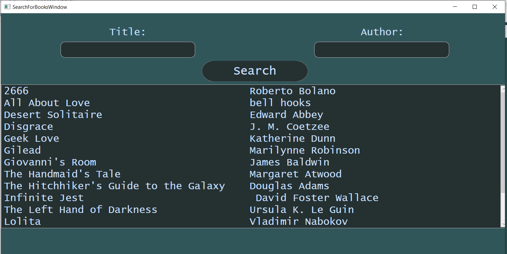

Ha a "Search for books" gombra kattintott akkor a következő ablakot fogja látni:
Ebben az ablakba ön keresni tud a könyvek között, cím és szerző alapján. Nem fontos pontosan beírni a címet vagy a szerző nevét elég ha egy kis részletet begépelnek belőle, viszont az ékezetekre figyelni kell.
Search gomb
Erre a gomra kattintva a "Title" és az "Author" mezőkbe begépelt címek és/vagy szerzők alapján a program kilistázza a kritériumoknak megfelelő könyveket (természetesen ha szerepelnek a nyilvántartásban). A listázás után rá lehet kattintani a kívánt könyvre. Ha rákattintottunk akkor kiválasztottuk a többi közül és további műveleteket tudunk rajta végezni.